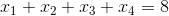

06.函数和模块的使用
函数和模块的使用¶
在讲解本章节的内容之前，我们先来研究一道数学题，请说出下面的方程有多少组正整数解。

事实上，上面的问题等同于将8个苹果分成四组每组至少一个苹果有多少种方案。想到这一点问题的答案就呼之欲出了。
可以用Python的程序来计算出这个值，代码如下所示。
| Python | |
|---|---|
函数的作用¶
不知道大家是否注意到，在上面的代码中，我们做了3次求阶乘，这样的代码实际上就是重复代码。编程大师Martin Fowler先生曾经说过：“代码有很多种坏味道，重复是最坏的一种！”，要写出高质量的代码首先要解决的就是重复代码的问题。对于上面的代码来说，我们可以将计算阶乘的功能封装到一个称之为“函数”的功能模块中，在需要计算阶乘的地方，我们只需要“调用”这个“函数”就可以了。
定义函数¶
在Python中可以使用def关键字来定义函数，和变量一样每个函数也有一个响亮的名字，而且命名规则跟变量的命名规则是一致的。在函数名后面的圆括号中可以放置传递给函数的参数，这一点和数学上的函数非常相似，程序中函数的参数就相当于是数学上说的函数的自变量，而函数执行完成后我们可以通过return关键字来返回一个值，这相当于数学上说的函数的因变量。
在了解了如何定义函数后，我们可以对上面的代码进行重构，所谓重构就是在不影响代码执行结果的前提下对代码的结构进行调整，重构之后的代码如下所示。
| Python | |
|---|---|
说明： Python的
math模块中其实已经有一个名为factorial函数实现了阶乘运算，事实上求阶乘并不用自己定义函数。下面的例子中，我们讲的函数在Python标准库已经实现过了，我们这里是为了讲解函数的定义和使用才把它们又实现了一遍，实际开发中并不建议做这种低级的重复劳动。
函数的参数¶
函数是绝大多数编程语言中都支持的一个代码的"构建块"，但是Python中的函数与其他语言中的函数还是有很多不太相同的地方，其中一个显著的区别就是Python对函数参数的处理。在Python中，函数的参数可以有默认值，也支持使用可变参数，所以Python并不需要像其他语言一样支持函数的重载，因为我们在定义一个函数的时候可以让它有多种不同的使用方式，下面是两个小例子。
我们给上面两个函数的参数都设定了默认值，这也就意味着如果在调用函数的时候如果没有传入对应参数的值时将使用该参数的默认值，所以在上面的代码中我们可以用各种不同的方式去调用add函数，这跟其他很多语言中函数重载的效果是一致的。
其实上面的add函数还有更好的实现方案，因为我们可能会对0个或多个参数进行加法运算，而具体有多少个参数是由调用者来决定，我们作为函数的设计者对这一点是一无所知的，因此在不确定参数个数的时候，我们可以使用可变参数，代码如下所示。
| Python | |
|---|---|
用模块管理函数¶
对于任何一种编程语言来说，给变量、函数这样的标识符起名字都是一个让人头疼的问题，因为我们会遇到命名冲突这种尴尬的情况。最简单的场景就是在同一个.py文件中定义了两个同名函数，由于Python没有函数重载的概念，那么后面的定义会覆盖之前的定义，也就意味着两个函数同名函数实际上只有一个是存在的。
| Python | |
|---|---|
当然上面的这种情况我们很容易就能避免，但是如果项目是由多人协作进行团队开发的时候，团队中可能有多个程序员都定义了名为foo的函数，那么怎么解决这种命名冲突呢？答案其实很简单，Python中每个文件就代表了一个模块（module），我们在不同的模块中可以有同名的函数，在使用函数的时候我们通过import关键字导入指定的模块就可以区分到底要使用的是哪个模块中的foo函数，代码如下所示。
module1.py
module2.py
test.py
| Python | |
|---|---|
也可以按照如下所示的方式来区分到底要使用哪一个foo函数。
test.py
但是如果将代码写成了下面的样子，那么程序中调用的是最后导入的那个foo，因为后导入的foo覆盖了之前导入的foo。
test.py
test.py
需要说明的是，如果我们导入的模块除了定义函数之外还有可以执行代码，那么Python解释器在导入这个模块时就会执行这些代码，事实上我们可能并不希望如此，因此如果我们在模块中编写了执行代码，最好是将这些执行代码放入如下所示的条件中，这样的话除非直接运行该模块，if条件下的这些代码是不会执行的，因为只有直接执行的模块的名字才是"__main__"。
module3.py
| Python | |
|---|---|
test.py
练习¶
练习1：实现计算求最大公约数和最小公倍数的函数。¶
参考答案：
| Python | |
|---|---|
练习2：实现判断一个数是不是回文数的函数。¶
参考答案：
| Python | |
|---|---|
练习3：实现判断一个数是不是素数的函数。¶
参考答案：
| Python | |
|---|---|
练习4：写一个程序判断输入的正整数是不是回文素数。¶
参考答案：
| Python | |
|---|---|
注意：通过上面的程序可以看出，当我们将代码中重复出现的和相对独立的功能抽取成函数后，我们可以组合使用这些函数来解决更为复杂的问题，这也是我们为什么要定义和使用函数的一个非常重要的原因。
变量的作用域¶
最后，我们来讨论一下Python中有关变量作用域的问题。
| Python | |
|---|---|
上面的代码能够顺利的执行并且打印出100、hello和True，但我们注意到了，在bar函数的内部并没有定义a和b两个变量，那么a和b是从哪里来的。我们在上面代码的if分支中定义了一个变量a，这是一个全局变量（global variable），属于全局作用域，因为它没有定义在任何一个函数中。在上面的foo函数中我们定义了变量b，这是一个定义在函数中的局部变量（local variable），属于局部作用域，在foo函数的外部并不能访问到它；但对于foo函数内部的bar函数来说，变量b属于嵌套作用域，在bar函数中我们是可以访问到它的。bar函数中的变量c属于局部作用域，在bar函数之外是无法访问的。事实上，Python查找一个变量时会按照“局部作用域”、“嵌套作用域”、“全局作用域”和“内置作用域”的顺序进行搜索，前三者我们在上面的代码中已经看到了，所谓的“内置作用域”就是Python内置的那些标识符，我们之前用过的input、print、int等都属于内置作用域。
再看看下面这段代码，我们希望通过函数调用修改全局变量a的值，但实际上下面的代码是做不到的。
| Python | |
|---|---|
在调用foo函数后，我们发现a的值仍然是100，这是因为当我们在函数foo中写a = 200的时候，是重新定义了一个名字为a的局部变量，它跟全局作用域的a并不是同一个变量，因为局部作用域中有了自己的变量a，因此foo函数不再搜索全局作用域中的a。如果我们希望在foo函数中修改全局作用域中的a，代码如下所示。
| Python | |
|---|---|
我们可以使用global关键字来指示foo函数中的变量a来自于全局作用域，如果全局作用域中没有a，那么下面一行的代码就会定义变量a并将其置于全局作用域。同理，如果我们希望函数内部的函数能够修改嵌套作用域中的变量，可以使用nonlocal关键字来指示变量来自于嵌套作用域，请大家自行试验。
在实际开发中，我们应该尽量减少对全局变量的使用，因为全局变量的作用域和影响过于广泛，可能会发生意料之外的修改和使用，除此之外全局变量比局部变量拥有更长的生命周期，可能导致对象占用的内存长时间无法被垃圾回收。事实上，减少对全局变量的使用，也是降低代码之间耦合度的一个重要举措，同时也是对迪米特法则的践行。减少全局变量的使用就意味着我们应该尽量让变量的作用域在函数的内部，但是如果我们希望将一个局部变量的生命周期延长，使其在定义它的函数调用结束后依然可以使用它的值，这时候就需要使用闭包，这个我们在后续的内容中进行讲解。
说明： 很多人经常会将“闭包”和“匿名函数”混为一谈，但实际上它们并不是一回事，如果想了解这个概念，可以看看维基百科的解释或者知乎上对这个概念的讨论。
说了那么多，其实结论很简单，从现在开始我们可以将Python代码按照下面的格式进行书写，这一点点的改进其实就是在我们理解了函数和作用域的基础上跨出的巨大的一步。